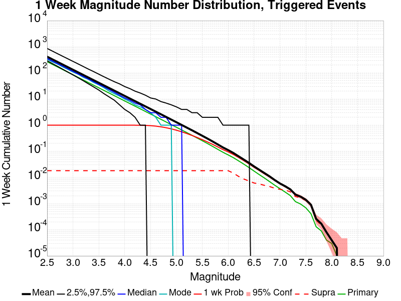
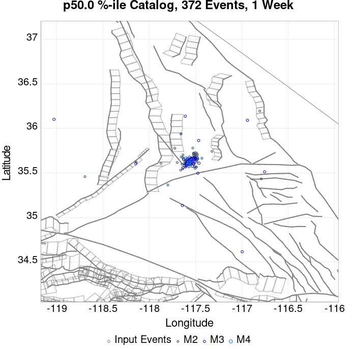
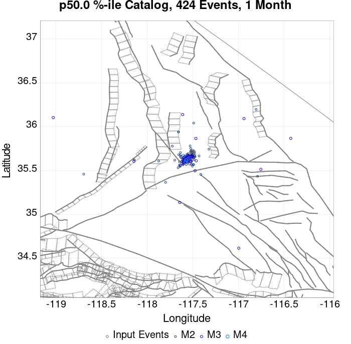
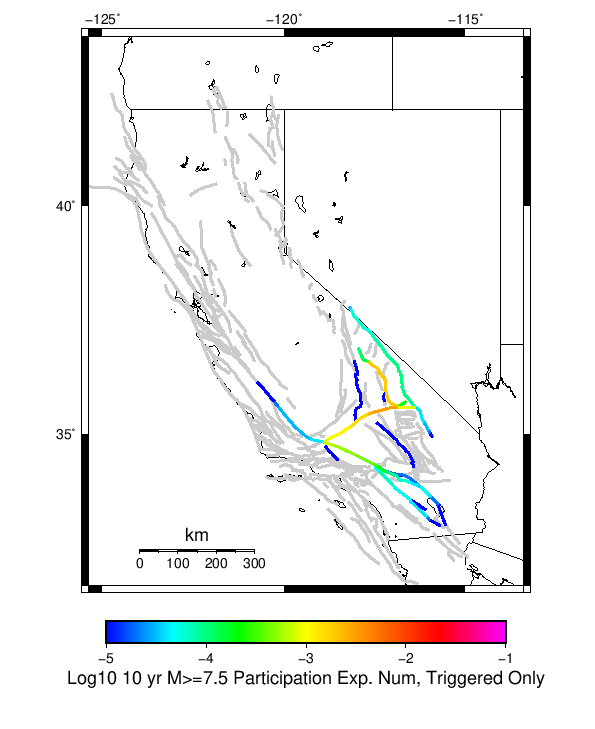
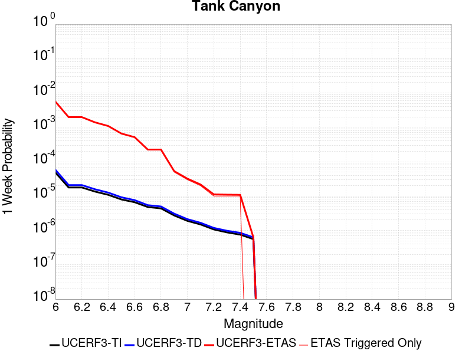

| ComCat M6.4 (ci38443183), ShakeMap Surface | |
|---|---|
| Num Simulations | 936 (incomplete) |
| Start Time | 2019/07/04 17:33:50 UTC |
| Start Time Epoch Milliseconds | 1562261630000 |
| Duration | 10 Years |
| Includes Spontaneous? | false |
| Historical Ruptures | (none) |
| Magnitude | 1 Hour Prob | 1 Day Prob | 1 Week Prob | 1 Month Prob | 1 Year Prob | 10 Year Prob |
|---|---|---|---|---|---|---|
| M≥3 | 1.000 (100.00%) | 1.000 (100.00%) | 1.000 (100.00%) | 1.000 (100.00%) | 1.000 (100.00%) | 1.000 (100.00%) |
| M≥3.5 | 1.000 (100.00%) | 1.000 (100.00%) | 1.000 (100.00%) | 1.000 (100.00%) | 1.000 (100.00%) | 1.000 (100.00%) |
| M≥4 | 0.933 (93.27%) | 0.999 (99.89%) | 0.999 (99.89%) | 1.000 (100.00%) | 1.000 (100.00%) | 1.000 (100.00%) |
| M≥4.5 | 0.565 (56.52%) | 0.903 (90.28%) | 0.951 (95.09%) | 0.980 (97.97%) | 0.995 (99.47%) | 0.999 (99.89%) |
| M≥5 | 0.218 (21.79%) | 0.521 (52.14%) | 0.629 (62.93%) | 0.712 (71.15%) | 0.800 (80.02%) | 0.849 (84.94%) |
| M≥5.5 | 0.073 (7.26%) | 0.202 (20.19%) | 0.268 (26.82%) | 0.318 (31.84%) | 0.382 (38.25%) | 0.442 (44.23%) |
| M≥6 | 0.018 (1.82%) | 0.060 (5.98%) | 0.082 (8.23%) | 0.098 (9.83%) | 0.134 (13.35%) | 0.156 (15.60%) |
| M≥6.4 | 6.41E-3 (0.64%) | 0.021 (2.14%) | 0.030 (2.99%) | 0.038 (3.85%) | 0.047 (4.70%) | 0.053 (5.34%) |
| M≥6.5 | 2.14E-3 (0.21%) | 0.015 (1.50%) | 0.018 (1.82%) | 0.026 (2.56%) | 0.034 (3.42%) | 0.041 (4.06%) |
| M≥7 | 0.000 (0.00%) | 2.14E-3 (0.21%) | 5.34E-3 (0.53%) | 7.48E-3 (0.75%) | 9.62E-3 (0.96%) | 0.011 (1.07%) |
| M≥7.5 | 0.000 (0.00%) | 2.14E-3 (0.21%) | 3.21E-3 (0.32%) | 3.21E-3 (0.32%) | 4.27E-3 (0.43%) | 4.27E-3 (0.43%) |
Legend
| Mag | Mean | 2.5 %ile | 97.5 %ile | Median | Mode | 10 yr Probability | 10 yr Supra-Seis Prob | Primary Aftershocks Mean |
|---|---|---|---|---|---|---|---|---|
| M≥2.5 | 982.497 | 535.000 | 2759.000 | 714.000 | 722.000 | 1.000 (100.00%) | 0.034 (3.42%) | 418.112 |
| M≥2.6 | 780.722 | 422.000 | 2170.000 | 568.000 | 482.000 | 1.000 (100.00%) | 0.034 (3.42%) | 332.658 |
| M≥2.7 | 620.286 | 335.000 | 1709.000 | 451.000 | 394.000 | 1.000 (100.00%) | 0.034 (3.42%) | 264.431 |
| M≥2.8 | 492.415 | 264.000 | 1362.000 | 359.000 | 309.000 | 1.000 (100.00%) | 0.034 (3.42%) | 209.641 |
| M≥2.9 | 390.921 | 206.000 | 1073.000 | 285.000 | 246.000 | 1.000 (100.00%) | 0.034 (3.42%) | 166.615 |
| M≥3 | 310.310 | 161.000 | 860.000 | 226.000 | 202.000 | 1.000 (100.00%) | 0.034 (3.42%) | 132.158 |
| M≥3.1 | 246.066 | 126.000 | 679.000 | 179.000 | 173.000 | 1.000 (100.00%) | 0.034 (3.42%) | 104.897 |
| M≥3.2 | 195.599 | 100.000 | 532.000 | 143.000 | 127.000 | 1.000 (100.00%) | 0.034 (3.42%) | 83.331 |
| M≥3.3 | 155.373 | 78.000 | 426.000 | 113.000 | 110.000 | 1.000 (100.00%) | 0.034 (3.42%) | 66.246 |
| M≥3.4 | 123.218 | 57.000 | 335.000 | 91.000 | 87.000 | 1.000 (100.00%) | 0.034 (3.42%) | 52.581 |
| M≥3.5 | 97.705 | 44.000 | 269.000 | 72.000 | 76.000 | 1.000 (100.00%) | 0.034 (3.42%) | 41.718 |
| M≥3.6 | 77.693 | 34.000 | 216.000 | 57.000 | 56.000 | 1.000 (100.00%) | 0.034 (3.42%) | 33.144 |
| M≥3.7 | 61.804 | 26.000 | 168.000 | 46.000 | 37.000 | 1.000 (100.00%) | 0.034 (3.42%) | 26.432 |
| M≥3.8 | 49.025 | 19.000 | 131.000 | 36.000 | 30.000 | 1.000 (100.00%) | 0.034 (3.42%) | 20.947 |
| M≥3.9 | 38.966 | 15.000 | 105.000 | 29.000 | 24.000 | 1.000 (100.00%) | 0.034 (3.42%) | 16.608 |
| M≥4 | 30.946 | 11.000 | 84.000 | 23.000 | 20.000 | 1.000 (100.00%) | 0.034 (3.42%) | 13.126 |
| M≥4.1 | 24.543 | 8.000 | 66.000 | 18.000 | 16.000 | 1.000 (100.00%) | 0.034 (3.42%) | 10.424 |
| M≥4.2 | 19.544 | 6.000 | 54.000 | 14.000 | 14.000 | 1.000 (100.00%) | 0.034 (3.42%) | 8.257 |
| M≥4.3 | 15.476 | 4.000 | 46.000 | 11.000 | 7.000 | 1.000 (100.00%) | 0.034 (3.42%) | 6.493 |
| M≥4.4 | 12.223 | 3.000 | 36.000 | 9.000 | 6.000 | 0.999 (99.89%) | 0.034 (3.42%) | 5.091 |
| M≥4.5 | 9.686 | 2.000 | 30.000 | 7.000 | 5.000 | 0.999 (99.89%) | 0.034 (3.42%) | 4.066 |
| M≥4.6 | 7.704 | 1.000 | 24.000 | 6.000 | 3.000 | 0.989 (98.93%) | 0.034 (3.42%) | 3.246 |
| M≥4.7 | 6.060 | 0.000 | 20.000 | 4.000 | 2.000 | 0.972 (97.22%) | 0.034 (3.42%) | 2.593 |
| M≥4.8 | 4.849 | 0.000 | 16.000 | 3.000 | 2.000 | 0.944 (94.44%) | 0.034 (3.42%) | 2.067 |
| M≥4.9 | 3.876 | 0.000 | 13.000 | 3.000 | 1.000 | 0.896 (89.64%) | 0.034 (3.42%) | 1.643 |
| M≥5 | 3.049 | 0.000 | 11.000 | 2.000 | 1.000 | 0.849 (84.94%) | 0.034 (3.42%) | 1.288 |
| M≥5.1 | 2.402 | 0.000 | 9.000 | 1.000 | 1.000 | 0.770 (77.03%) | 0.034 (3.42%) | 1.022 |
| M≥5.2 | 1.865 | 0.000 | 8.000 | 1.000 | 0.000 | 0.682 (68.16%) | 0.034 (3.42%) | 0.791 |
| M≥5.3 | 1.494 | 0.000 | 7.000 | 1.000 | 0.000 | 0.598 (59.83%) | 0.034 (3.42%) | 0.641 |
| M≥5.4 | 1.161 | 0.000 | 5.000 | 1.000 | 0.000 | 0.522 (52.24%) | 0.034 (3.42%) | 0.494 |
| M≥5.5 | 0.912 | 0.000 | 5.000 | 0.000 | 0.000 | 0.442 (44.23%) | 0.034 (3.42%) | 0.391 |
| M≥5.6 | 0.709 | 0.000 | 4.000 | 0.000 | 0.000 | 0.379 (37.93%) | 0.034 (3.42%) | 0.307 |
| M≥5.7 | 0.561 | 0.000 | 3.000 | 0.000 | 0.000 | 0.327 (32.69%) | 0.034 (3.42%) | 0.254 |
| M≥5.8 | 0.411 | 0.000 | 3.000 | 0.000 | 0.000 | 0.245 (24.47%) | 0.034 (3.42%) | 0.184 |
| M≥5.9 | 0.296 | 0.000 | 2.000 | 0.000 | 0.000 | 0.187 (18.70%) | 0.034 (3.42%) | 0.134 |
| M≥6 | 0.229 | 0.000 | 2.000 | 0.000 | 0.000 | 0.156 (15.60%) | 0.034 (3.42%) | 0.101 |
| M≥6.1 | 0.169 | 0.000 | 1.000 | 0.000 | 0.000 | 0.124 (12.39%) | 0.028 (2.78%) | 0.076 |
| M≥6.2 | 0.123 | 0.000 | 1.000 | 0.000 | 0.000 | 0.091 (9.08%) | 0.022 (2.24%) | 0.051 |
| M≥6.3 | 0.097 | 0.000 | 1.000 | 0.000 | 0.000 | 0.074 (7.37%) | 0.021 (2.14%) | 0.038 |
| M≥6.4 | 0.071 | 0.000 | 1.000 | 0.000 | 0.000 | 0.053 (5.34%) | 0.015 (1.50%) | 0.027 |
| M≥6.5 | 0.050 | 0.000 | 1.000 | 0.000 | 0.000 | 0.041 (4.06%) | 0.011 (1.07%) | 0.016 |
| M≥6.6 | 0.037 | 0.000 | 1.000 | 0.000 | 0.000 | 0.031 (3.10%) | 0.011 (1.07%) | 0.013 |
| M≥6.7 | 0.034 | 0.000 | 1.000 | 0.000 | 0.000 | 0.028 (2.78%) | 9.62E-3 (0.96%) | 0.012 |
| M≥6.8 | 0.025 | 0.000 | 0.000 | 0.000 | 0.000 | 0.021 (2.14%) | 6.41E-3 (0.64%) | 9.62E-3 |
| M≥6.9 | 0.018 | 0.000 | 0.000 | 0.000 | 0.000 | 0.016 (1.60%) | 6.41E-3 (0.64%) | 6.41E-3 |
| M≥7 | 0.013 | 0.000 | 0.000 | 0.000 | 0.000 | 0.011 (1.07%) | 5.34E-3 (0.53%) | 4.27E-3 |
| M≥7.1 | 9.62E-3 | 0.000 | 0.000 | 0.000 | 0.000 | 8.55E-3 (0.85%) | 5.34E-3 (0.53%) | 3.21E-3 |
| M≥7.2 | 5.34E-3 | 0.000 | 0.000 | 0.000 | 0.000 | 4.27E-3 (0.43%) | 4.27E-3 (0.43%) | 2.14E-3 |
| M≥7.3 | 5.34E-3 | 0.000 | 0.000 | 0.000 | 0.000 | 4.27E-3 (0.43%) | 4.27E-3 (0.43%) | 2.14E-3 |
| M≥7.4 | 5.34E-3 | 0.000 | 0.000 | 0.000 | 0.000 | 4.27E-3 (0.43%) | 4.27E-3 (0.43%) | 2.14E-3 |
| M≥7.5 | 4.27E-3 | 0.000 | 0.000 | 0.000 | 0.000 | 4.27E-3 (0.43%) | 4.27E-3 (0.43%) | 2.14E-3 |
| M≥7.6 | 2.14E-3 | 0.000 | 0.000 | 0.000 | 0.000 | 2.14E-3 (0.21%) | 2.14E-3 (0.21%) | 1.07E-3 |
| M≥7.7 | 2.14E-3 | 0.000 | 0.000 | 0.000 | 0.000 | 2.14E-3 (0.21%) | 2.14E-3 (0.21%) | 1.07E-3 |
| M≥7.8 | 2.14E-3 | 0.000 | 0.000 | 0.000 | 0.000 | 2.14E-3 (0.21%) | 2.14E-3 (0.21%) | 1.07E-3 |
| M≥7.9 | 2.14E-3 | 0.000 | 0.000 | 0.000 | 0.000 | 2.14E-3 (0.21%) | 2.14E-3 (0.21%) | 1.07E-3 |
| M≥8 | 0.000 | 0.000 | 0.000 | 0.000 | 0.000 | 0.000 (0.00%) | 0.000 (0.00%) | 0.000 |
| M≥8.1 | 0.000 | 0.000 | 0.000 | 0.000 | 0.000 | 0.000 (0.00%) | 0.000 (0.00%) | 0.000 |
| M≥8.2 | 0.000 | 0.000 | 0.000 | 0.000 | 0.000 | 0.000 (0.00%) | 0.000 (0.00%) | 0.000 |
| M≥8.3 | 0.000 | 0.000 | 0.000 | 0.000 | 0.000 | 0.000 (0.00%) | 0.000 (0.00%) | 0.000 |
| M≥8.4 | 0.000 | 0.000 | 0.000 | 0.000 | 0.000 | 0.000 (0.00%) | 0.000 (0.00%) | 0.000 |
| M≥8.5 | 0.000 | 0.000 | 0.000 | 0.000 | 0.000 | 0.000 (0.00%) | 0.000 (0.00%) | 0.000 |
| M≥8.6 | 0.000 | 0.000 | 0.000 | 0.000 | 0.000 | 0.000 (0.00%) | 0.000 (0.00%) | 0.000 |
| M≥8.7 | 0.000 | 0.000 | 0.000 | 0.000 | 0.000 | 0.000 (0.00%) | 0.000 (0.00%) | 0.000 |
| M≥8.8 | 0.000 | 0.000 | 0.000 | 0.000 | 0.000 | 0.000 (0.00%) | 0.000 (0.00%) | 0.000 |
| M≥8.9 | 0.000 | 0.000 | 0.000 | 0.000 | 0.000 | 0.000 (0.00%) | 0.000 (0.00%) | 0.000 |
| M≥9 | 0.000 | 0.000 | 0.000 | 0.000 | 0.000 | 0.000 (0.00%) | 0.000 (0.00%) | 0.000 |
Legend

| Mag | Mean | 2.5 %ile | 97.5 %ile | Median | Mode | 1 yr Probability | 1 yr Supra-Seis Prob | Primary Aftershocks Mean |
|---|---|---|---|---|---|---|---|---|
| M≥2.5 | 765.653 | 447.000 | 2015.000 | 578.000 | 531.000 | 1.000 (100.00%) | 0.029 (2.88%) | 370.281 |
| M≥2.6 | 608.138 | 356.000 | 1623.000 | 459.000 | 436.000 | 1.000 (100.00%) | 0.029 (2.88%) | 294.489 |
| M≥2.7 | 483.153 | 281.000 | 1275.000 | 366.000 | 335.000 | 1.000 (100.00%) | 0.029 (2.88%) | 234.038 |
| M≥2.8 | 383.627 | 219.000 | 1009.000 | 291.000 | 274.000 | 1.000 (100.00%) | 0.029 (2.88%) | 185.532 |
| M≥2.9 | 304.616 | 170.000 | 804.000 | 231.000 | 210.000 | 1.000 (100.00%) | 0.029 (2.88%) | 147.444 |
| M≥3 | 241.675 | 134.000 | 634.000 | 183.000 | 170.000 | 1.000 (100.00%) | 0.029 (2.88%) | 116.965 |
| M≥3.1 | 191.655 | 104.000 | 509.000 | 146.000 | 140.000 | 1.000 (100.00%) | 0.029 (2.88%) | 92.806 |
| M≥3.2 | 152.406 | 81.000 | 408.000 | 116.000 | 107.000 | 1.000 (100.00%) | 0.029 (2.88%) | 73.754 |
| M≥3.3 | 121.063 | 63.000 | 311.000 | 92.000 | 80.000 | 1.000 (100.00%) | 0.029 (2.88%) | 58.637 |
| M≥3.4 | 96.033 | 48.000 | 253.000 | 74.000 | 65.000 | 1.000 (100.00%) | 0.029 (2.88%) | 46.604 |
| M≥3.5 | 76.253 | 36.000 | 205.000 | 59.000 | 52.000 | 1.000 (100.00%) | 0.029 (2.88%) | 36.972 |
| M≥3.6 | 60.610 | 28.000 | 162.000 | 47.000 | 38.000 | 1.000 (100.00%) | 0.029 (2.88%) | 29.356 |
| M≥3.7 | 48.244 | 21.000 | 129.000 | 37.000 | 28.000 | 1.000 (100.00%) | 0.029 (2.88%) | 23.416 |
| M≥3.8 | 38.206 | 15.000 | 101.000 | 30.000 | 25.000 | 1.000 (100.00%) | 0.029 (2.88%) | 18.529 |
| M≥3.9 | 30.390 | 11.000 | 82.000 | 23.000 | 17.000 | 1.000 (100.00%) | 0.029 (2.88%) | 14.707 |
| M≥4 | 24.076 | 8.000 | 65.000 | 19.000 | 16.000 | 1.000 (100.00%) | 0.029 (2.88%) | 11.605 |
| M≥4.1 | 19.087 | 6.000 | 53.000 | 15.000 | 15.000 | 1.000 (100.00%) | 0.029 (2.88%) | 9.234 |
| M≥4.2 | 15.166 | 4.000 | 42.000 | 12.000 | 12.000 | 1.000 (100.00%) | 0.029 (2.88%) | 7.313 |
| M≥4.3 | 12.010 | 3.000 | 34.000 | 9.000 | 6.000 | 1.000 (100.00%) | 0.029 (2.88%) | 5.747 |
| M≥4.4 | 9.494 | 2.000 | 27.000 | 7.000 | 6.000 | 0.999 (99.89%) | 0.029 (2.88%) | 4.516 |
| M≥4.5 | 7.516 | 1.000 | 22.000 | 6.000 | 4.000 | 0.995 (99.47%) | 0.029 (2.88%) | 3.611 |
| M≥4.6 | 5.966 | 1.000 | 19.000 | 4.000 | 3.000 | 0.981 (98.08%) | 0.029 (2.88%) | 2.882 |
| M≥4.7 | 4.692 | 0.000 | 15.000 | 3.000 | 2.000 | 0.953 (95.30%) | 0.029 (2.88%) | 2.302 |
| M≥4.8 | 3.747 | 0.000 | 13.000 | 3.000 | 2.000 | 0.911 (91.13%) | 0.029 (2.88%) | 1.829 |
| M≥4.9 | 2.993 | 0.000 | 11.000 | 2.000 | 1.000 | 0.858 (85.79%) | 0.029 (2.88%) | 1.450 |
| M≥5 | 2.357 | 0.000 | 9.000 | 1.000 | 1.000 | 0.800 (80.02%) | 0.029 (2.88%) | 1.130 |
| M≥5.1 | 1.851 | 0.000 | 7.000 | 1.000 | 1.000 | 0.709 (70.94%) | 0.029 (2.88%) | 0.896 |
| M≥5.2 | 1.439 | 0.000 | 6.000 | 1.000 | 0.000 | 0.611 (61.11%) | 0.029 (2.88%) | 0.693 |
| M≥5.3 | 1.147 | 0.000 | 5.000 | 1.000 | 0.000 | 0.530 (52.99%) | 0.029 (2.88%) | 0.561 |
| M≥5.4 | 0.879 | 0.000 | 4.000 | 0.000 | 0.000 | 0.451 (45.09%) | 0.029 (2.88%) | 0.431 |
| M≥5.5 | 0.693 | 0.000 | 4.000 | 0.000 | 0.000 | 0.382 (38.25%) | 0.029 (2.88%) | 0.343 |
| M≥5.6 | 0.534 | 0.000 | 3.000 | 0.000 | 0.000 | 0.321 (32.05%) | 0.029 (2.88%) | 0.268 |
| M≥5.7 | 0.429 | 0.000 | 3.000 | 0.000 | 0.000 | 0.277 (27.67%) | 0.029 (2.88%) | 0.224 |
| M≥5.8 | 0.319 | 0.000 | 2.000 | 0.000 | 0.000 | 0.208 (20.83%) | 0.029 (2.88%) | 0.163 |
| M≥5.9 | 0.233 | 0.000 | 2.000 | 0.000 | 0.000 | 0.160 (16.03%) | 0.029 (2.88%) | 0.121 |
| M≥6 | 0.184 | 0.000 | 2.000 | 0.000 | 0.000 | 0.134 (13.35%) | 0.029 (2.88%) | 0.093 |
| M≥6.1 | 0.138 | 0.000 | 1.000 | 0.000 | 0.000 | 0.107 (10.68%) | 0.024 (2.35%) | 0.069 |
| M≥6.2 | 0.099 | 0.000 | 1.000 | 0.000 | 0.000 | 0.078 (7.80%) | 0.019 (1.92%) | 0.048 |
| M≥6.3 | 0.080 | 0.000 | 1.000 | 0.000 | 0.000 | 0.064 (6.41%) | 0.017 (1.71%) | 0.037 |
| M≥6.4 | 0.060 | 0.000 | 1.000 | 0.000 | 0.000 | 0.047 (4.70%) | 0.013 (1.28%) | 0.026 |
| M≥6.5 | 0.041 | 0.000 | 1.000 | 0.000 | 0.000 | 0.034 (3.42%) | 8.55E-3 (0.85%) | 0.015 |
| M≥6.6 | 0.030 | 0.000 | 1.000 | 0.000 | 0.000 | 0.026 (2.56%) | 8.55E-3 (0.85%) | 0.012 |
| M≥6.7 | 0.028 | 0.000 | 0.000 | 0.000 | 0.000 | 0.024 (2.35%) | 7.48E-3 (0.75%) | 0.011 |
| M≥6.8 | 0.021 | 0.000 | 0.000 | 0.000 | 0.000 | 0.019 (1.92%) | 5.34E-3 (0.53%) | 9.62E-3 |
| M≥6.9 | 0.015 | 0.000 | 0.000 | 0.000 | 0.000 | 0.014 (1.39%) | 5.34E-3 (0.53%) | 6.41E-3 |
| M≥7 | 0.011 | 0.000 | 0.000 | 0.000 | 0.000 | 9.62E-3 (0.96%) | 4.27E-3 (0.43%) | 4.27E-3 |
| M≥7.1 | 7.48E-3 | 0.000 | 0.000 | 0.000 | 0.000 | 7.48E-3 (0.75%) | 4.27E-3 (0.43%) | 3.21E-3 |
| M≥7.2 | 4.27E-3 | 0.000 | 0.000 | 0.000 | 0.000 | 4.27E-3 (0.43%) | 4.27E-3 (0.43%) | 2.14E-3 |
| M≥7.3 | 4.27E-3 | 0.000 | 0.000 | 0.000 | 0.000 | 4.27E-3 (0.43%) | 4.27E-3 (0.43%) | 2.14E-3 |
| M≥7.4 | 4.27E-3 | 0.000 | 0.000 | 0.000 | 0.000 | 4.27E-3 (0.43%) | 4.27E-3 (0.43%) | 2.14E-3 |
| M≥7.5 | 4.27E-3 | 0.000 | 0.000 | 0.000 | 0.000 | 4.27E-3 (0.43%) | 4.27E-3 (0.43%) | 2.14E-3 |
| M≥7.6 | 2.14E-3 | 0.000 | 0.000 | 0.000 | 0.000 | 2.14E-3 (0.21%) | 2.14E-3 (0.21%) | 1.07E-3 |
| M≥7.7 | 2.14E-3 | 0.000 | 0.000 | 0.000 | 0.000 | 2.14E-3 (0.21%) | 2.14E-3 (0.21%) | 1.07E-3 |
| M≥7.8 | 2.14E-3 | 0.000 | 0.000 | 0.000 | 0.000 | 2.14E-3 (0.21%) | 2.14E-3 (0.21%) | 1.07E-3 |
| M≥7.9 | 2.14E-3 | 0.000 | 0.000 | 0.000 | 0.000 | 2.14E-3 (0.21%) | 2.14E-3 (0.21%) | 1.07E-3 |
| M≥8 | 0.000 | 0.000 | 0.000 | 0.000 | 0.000 | 0.000 (0.00%) | 0.000 (0.00%) | 0.000 |
| M≥8.1 | 0.000 | 0.000 | 0.000 | 0.000 | 0.000 | 0.000 (0.00%) | 0.000 (0.00%) | 0.000 |
| M≥8.2 | 0.000 | 0.000 | 0.000 | 0.000 | 0.000 | 0.000 (0.00%) | 0.000 (0.00%) | 0.000 |
| M≥8.3 | 0.000 | 0.000 | 0.000 | 0.000 | 0.000 | 0.000 (0.00%) | 0.000 (0.00%) | 0.000 |
| M≥8.4 | 0.000 | 0.000 | 0.000 | 0.000 | 0.000 | 0.000 (0.00%) | 0.000 (0.00%) | 0.000 |
| M≥8.5 | 0.000 | 0.000 | 0.000 | 0.000 | 0.000 | 0.000 (0.00%) | 0.000 (0.00%) | 0.000 |
| M≥8.6 | 0.000 | 0.000 | 0.000 | 0.000 | 0.000 | 0.000 (0.00%) | 0.000 (0.00%) | 0.000 |
| M≥8.7 | 0.000 | 0.000 | 0.000 | 0.000 | 0.000 | 0.000 (0.00%) | 0.000 (0.00%) | 0.000 |
| M≥8.8 | 0.000 | 0.000 | 0.000 | 0.000 | 0.000 | 0.000 (0.00%) | 0.000 (0.00%) | 0.000 |
| M≥8.9 | 0.000 | 0.000 | 0.000 | 0.000 | 0.000 | 0.000 (0.00%) | 0.000 (0.00%) | 0.000 |
| M≥9 | 0.000 | 0.000 | 0.000 | 0.000 | 0.000 | 0.000 (0.00%) | 0.000 (0.00%) | 0.000 |
Legend

| Mag | Mean | 2.5 %ile | 97.5 %ile | Median | Mode | 1 mo Probability | 1 mo Supra-Seis Prob | Primary Aftershocks Mean |
|---|---|---|---|---|---|---|---|---|
| M≥2.5 | 545.767 | 349.000 | 1095.000 | 436.000 | 433.000 | 1.000 (100.00%) | 0.021 (2.14%) | 308.340 |
| M≥2.6 | 433.577 | 274.000 | 897.000 | 347.000 | 354.000 | 1.000 (100.00%) | 0.021 (2.14%) | 245.179 |
| M≥2.7 | 344.661 | 216.000 | 718.000 | 277.000 | 246.000 | 1.000 (100.00%) | 0.021 (2.14%) | 194.924 |
| M≥2.8 | 273.842 | 169.000 | 579.000 | 220.000 | 206.000 | 1.000 (100.00%) | 0.021 (2.14%) | 154.547 |
| M≥2.9 | 217.329 | 131.000 | 451.000 | 175.000 | 166.000 | 1.000 (100.00%) | 0.021 (2.14%) | 122.772 |
| M≥3 | 172.499 | 103.000 | 375.000 | 139.000 | 131.000 | 1.000 (100.00%) | 0.021 (2.14%) | 97.397 |
| M≥3.1 | 136.783 | 80.000 | 297.000 | 111.000 | 98.000 | 1.000 (100.00%) | 0.021 (2.14%) | 77.225 |
| M≥3.2 | 108.632 | 60.000 | 239.000 | 88.000 | 79.000 | 1.000 (100.00%) | 0.021 (2.14%) | 61.300 |
| M≥3.3 | 86.372 | 47.000 | 178.000 | 70.000 | 57.000 | 1.000 (100.00%) | 0.021 (2.14%) | 48.755 |
| M≥3.4 | 68.463 | 35.000 | 146.000 | 56.000 | 47.000 | 1.000 (100.00%) | 0.021 (2.14%) | 38.750 |
| M≥3.5 | 54.296 | 26.000 | 119.000 | 44.000 | 37.000 | 1.000 (100.00%) | 0.021 (2.14%) | 30.740 |
| M≥3.6 | 43.156 | 19.000 | 91.000 | 35.000 | 31.000 | 1.000 (100.00%) | 0.021 (2.14%) | 24.406 |
| M≥3.7 | 34.287 | 15.000 | 75.000 | 28.000 | 23.000 | 1.000 (100.00%) | 0.021 (2.14%) | 19.413 |
| M≥3.8 | 27.146 | 11.000 | 65.000 | 22.000 | 22.000 | 1.000 (100.00%) | 0.021 (2.14%) | 15.363 |
| M≥3.9 | 21.559 | 8.000 | 54.000 | 18.000 | 14.000 | 1.000 (100.00%) | 0.021 (2.14%) | 12.203 |
| M≥4 | 17.068 | 6.000 | 40.000 | 14.000 | 10.000 | 1.000 (100.00%) | 0.021 (2.14%) | 9.644 |
| M≥4.1 | 13.543 | 4.000 | 33.000 | 11.000 | 9.000 | 0.999 (99.89%) | 0.021 (2.14%) | 7.683 |
| M≥4.2 | 10.782 | 3.000 | 28.000 | 9.000 | 8.000 | 0.998 (99.79%) | 0.021 (2.14%) | 6.094 |
| M≥4.3 | 8.536 | 1.000 | 22.000 | 7.000 | 6.000 | 0.997 (99.68%) | 0.021 (2.14%) | 4.772 |
| M≥4.4 | 6.723 | 1.000 | 17.000 | 5.000 | 5.000 | 0.988 (98.82%) | 0.021 (2.14%) | 3.752 |
| M≥4.5 | 5.342 | 1.000 | 14.000 | 4.000 | 3.000 | 0.980 (97.97%) | 0.021 (2.14%) | 3.007 |
| M≥4.6 | 4.237 | 0.000 | 12.000 | 3.000 | 3.000 | 0.951 (95.09%) | 0.021 (2.14%) | 2.404 |
| M≥4.7 | 3.347 | 0.000 | 10.000 | 3.000 | 2.000 | 0.904 (90.38%) | 0.021 (2.14%) | 1.927 |
| M≥4.8 | 2.683 | 0.000 | 8.000 | 2.000 | 1.000 | 0.851 (85.15%) | 0.021 (2.14%) | 1.540 |
| M≥4.9 | 2.130 | 0.000 | 7.000 | 1.000 | 1.000 | 0.787 (78.74%) | 0.021 (2.14%) | 1.221 |
| M≥5 | 1.689 | 0.000 | 6.000 | 1.000 | 1.000 | 0.712 (71.15%) | 0.021 (2.14%) | 0.950 |
| M≥5.1 | 1.333 | 0.000 | 5.000 | 1.000 | 0.000 | 0.629 (62.93%) | 0.021 (2.14%) | 0.750 |
| M≥5.2 | 1.024 | 0.000 | 5.000 | 1.000 | 0.000 | 0.525 (52.46%) | 0.021 (2.14%) | 0.580 |
| M≥5.3 | 0.815 | 0.000 | 4.000 | 0.000 | 0.000 | 0.450 (44.98%) | 0.021 (2.14%) | 0.472 |
| M≥5.4 | 0.622 | 0.000 | 3.000 | 0.000 | 0.000 | 0.379 (37.93%) | 0.021 (2.14%) | 0.363 |
| M≥5.5 | 0.491 | 0.000 | 3.000 | 0.000 | 0.000 | 0.318 (31.84%) | 0.021 (2.14%) | 0.286 |
| M≥5.6 | 0.380 | 0.000 | 2.000 | 0.000 | 0.000 | 0.256 (25.64%) | 0.021 (2.14%) | 0.221 |
| M≥5.7 | 0.310 | 0.000 | 2.000 | 0.000 | 0.000 | 0.220 (22.01%) | 0.021 (2.14%) | 0.183 |
| M≥5.8 | 0.229 | 0.000 | 2.000 | 0.000 | 0.000 | 0.163 (16.35%) | 0.021 (2.14%) | 0.130 |
| M≥5.9 | 0.168 | 0.000 | 2.000 | 0.000 | 0.000 | 0.124 (12.39%) | 0.021 (2.14%) | 0.094 |
| M≥6 | 0.127 | 0.000 | 1.000 | 0.000 | 0.000 | 0.098 (9.83%) | 0.021 (2.14%) | 0.071 |
| M≥6.1 | 0.096 | 0.000 | 1.000 | 0.000 | 0.000 | 0.079 (7.91%) | 0.017 (1.71%) | 0.053 |
| M≥6.2 | 0.068 | 0.000 | 1.000 | 0.000 | 0.000 | 0.058 (5.77%) | 0.014 (1.39%) | 0.037 |
| M≥6.3 | 0.057 | 0.000 | 1.000 | 0.000 | 0.000 | 0.048 (4.81%) | 0.012 (1.18%) | 0.030 |
| M≥6.4 | 0.046 | 0.000 | 1.000 | 0.000 | 0.000 | 0.038 (3.85%) | 9.62E-3 (0.96%) | 0.022 |
| M≥6.5 | 0.029 | 0.000 | 1.000 | 0.000 | 0.000 | 0.026 (2.56%) | 5.34E-3 (0.53%) | 0.012 |
| M≥6.6 | 0.020 | 0.000 | 0.000 | 0.000 | 0.000 | 0.019 (1.92%) | 5.34E-3 (0.53%) | 8.55E-3 |
| M≥6.7 | 0.019 | 0.000 | 0.000 | 0.000 | 0.000 | 0.018 (1.82%) | 4.27E-3 (0.43%) | 7.48E-3 |
| M≥6.8 | 0.016 | 0.000 | 0.000 | 0.000 | 0.000 | 0.015 (1.50%) | 4.27E-3 (0.43%) | 7.48E-3 |
| M≥6.9 | 0.011 | 0.000 | 0.000 | 0.000 | 0.000 | 0.011 (1.07%) | 4.27E-3 (0.43%) | 5.34E-3 |
| M≥7 | 7.48E-3 | 0.000 | 0.000 | 0.000 | 0.000 | 7.48E-3 (0.75%) | 3.21E-3 (0.32%) | 4.27E-3 |
| M≥7.1 | 5.34E-3 | 0.000 | 0.000 | 0.000 | 0.000 | 5.34E-3 (0.53%) | 3.21E-3 (0.32%) | 3.21E-3 |
| M≥7.2 | 3.21E-3 | 0.000 | 0.000 | 0.000 | 0.000 | 3.21E-3 (0.32%) | 3.21E-3 (0.32%) | 2.14E-3 |
| M≥7.3 | 3.21E-3 | 0.000 | 0.000 | 0.000 | 0.000 | 3.21E-3 (0.32%) | 3.21E-3 (0.32%) | 2.14E-3 |
| M≥7.4 | 3.21E-3 | 0.000 | 0.000 | 0.000 | 0.000 | 3.21E-3 (0.32%) | 3.21E-3 (0.32%) | 2.14E-3 |
| M≥7.5 | 3.21E-3 | 0.000 | 0.000 | 0.000 | 0.000 | 3.21E-3 (0.32%) | 3.21E-3 (0.32%) | 2.14E-3 |
| M≥7.6 | 2.14E-3 | 0.000 | 0.000 | 0.000 | 0.000 | 2.14E-3 (0.21%) | 2.14E-3 (0.21%) | 1.07E-3 |
| M≥7.7 | 2.14E-3 | 0.000 | 0.000 | 0.000 | 0.000 | 2.14E-3 (0.21%) | 2.14E-3 (0.21%) | 1.07E-3 |
| M≥7.8 | 2.14E-3 | 0.000 | 0.000 | 0.000 | 0.000 | 2.14E-3 (0.21%) | 2.14E-3 (0.21%) | 1.07E-3 |
| M≥7.9 | 2.14E-3 | 0.000 | 0.000 | 0.000 | 0.000 | 2.14E-3 (0.21%) | 2.14E-3 (0.21%) | 1.07E-3 |
| M≥8 | 0.000 | 0.000 | 0.000 | 0.000 | 0.000 | 0.000 (0.00%) | 0.000 (0.00%) | 0.000 |
| M≥8.1 | 0.000 | 0.000 | 0.000 | 0.000 | 0.000 | 0.000 (0.00%) | 0.000 (0.00%) | 0.000 |
| M≥8.2 | 0.000 | 0.000 | 0.000 | 0.000 | 0.000 | 0.000 (0.00%) | 0.000 (0.00%) | 0.000 |
| M≥8.3 | 0.000 | 0.000 | 0.000 | 0.000 | 0.000 | 0.000 (0.00%) | 0.000 (0.00%) | 0.000 |
| M≥8.4 | 0.000 | 0.000 | 0.000 | 0.000 | 0.000 | 0.000 (0.00%) | 0.000 (0.00%) | 0.000 |
| M≥8.5 | 0.000 | 0.000 | 0.000 | 0.000 | 0.000 | 0.000 (0.00%) | 0.000 (0.00%) | 0.000 |
| M≥8.6 | 0.000 | 0.000 | 0.000 | 0.000 | 0.000 | 0.000 (0.00%) | 0.000 (0.00%) | 0.000 |
| M≥8.7 | 0.000 | 0.000 | 0.000 | 0.000 | 0.000 | 0.000 (0.00%) | 0.000 (0.00%) | 0.000 |
| M≥8.8 | 0.000 | 0.000 | 0.000 | 0.000 | 0.000 | 0.000 (0.00%) | 0.000 (0.00%) | 0.000 |
| M≥8.9 | 0.000 | 0.000 | 0.000 | 0.000 | 0.000 | 0.000 (0.00%) | 0.000 (0.00%) | 0.000 |
| M≥9 | 0.000 | 0.000 | 0.000 | 0.000 | 0.000 | 0.000 (0.00%) | 0.000 (0.00%) | 0.000 |
Legend

| Mag | Mean | 2.5 %ile | 97.5 %ile | Median | Mode | 1 wk Probability | 1 wk Supra-Seis Prob | Primary Aftershocks Mean |
|---|---|---|---|---|---|---|---|---|
| M≥2.5 | 430.574 | 289.000 | 779.000 | 359.000 | 359.000 | 1.000 (100.00%) | 0.018 (1.82%) | 267.365 |
| M≥2.6 | 342.199 | 226.000 | 615.000 | 285.000 | 290.000 | 1.000 (100.00%) | 0.018 (1.82%) | 212.662 |
| M≥2.7 | 272.073 | 177.000 | 495.000 | 227.000 | 209.000 | 1.000 (100.00%) | 0.018 (1.82%) | 169.049 |
| M≥2.8 | 216.093 | 138.000 | 394.000 | 180.000 | 183.000 | 1.000 (100.00%) | 0.018 (1.82%) | 133.984 |
| M≥2.9 | 171.377 | 107.000 | 310.000 | 143.000 | 131.000 | 1.000 (100.00%) | 0.018 (1.82%) | 106.401 |
| M≥3 | 135.990 | 85.000 | 248.000 | 113.000 | 113.000 | 1.000 (100.00%) | 0.018 (1.82%) | 84.418 |
| M≥3.1 | 107.730 | 65.000 | 192.000 | 90.000 | 83.000 | 1.000 (100.00%) | 0.018 (1.82%) | 66.892 |
| M≥3.2 | 85.531 | 49.000 | 156.000 | 71.000 | 67.000 | 1.000 (100.00%) | 0.018 (1.82%) | 53.084 |
| M≥3.3 | 67.988 | 37.000 | 124.000 | 57.000 | 58.000 | 1.000 (100.00%) | 0.018 (1.82%) | 42.183 |
| M≥3.4 | 53.954 | 28.000 | 98.000 | 45.000 | 47.000 | 1.000 (100.00%) | 0.018 (1.82%) | 33.536 |
| M≥3.5 | 42.788 | 21.000 | 78.000 | 36.000 | 37.000 | 1.000 (100.00%) | 0.018 (1.82%) | 26.627 |
| M≥3.6 | 34.049 | 16.000 | 63.000 | 29.000 | 28.000 | 1.000 (100.00%) | 0.018 (1.82%) | 21.139 |
| M≥3.7 | 27.097 | 12.000 | 52.000 | 23.000 | 20.000 | 1.000 (100.00%) | 0.018 (1.82%) | 16.804 |
| M≥3.8 | 21.472 | 8.000 | 42.000 | 18.000 | 17.000 | 1.000 (100.00%) | 0.018 (1.82%) | 13.274 |
| M≥3.9 | 17.061 | 6.000 | 34.000 | 14.000 | 13.000 | 0.999 (99.89%) | 0.018 (1.82%) | 10.547 |
| M≥4 | 13.499 | 5.000 | 28.000 | 11.000 | 9.000 | 0.999 (99.89%) | 0.018 (1.82%) | 8.330 |
| M≥4.1 | 10.729 | 3.000 | 22.000 | 9.000 | 6.000 | 0.999 (99.89%) | 0.018 (1.82%) | 6.635 |
| M≥4.2 | 8.548 | 2.000 | 19.000 | 7.000 | 6.000 | 0.998 (99.79%) | 0.018 (1.82%) | 5.274 |
| M≥4.3 | 6.732 | 1.000 | 15.000 | 5.000 | 4.000 | 0.994 (99.36%) | 0.018 (1.82%) | 4.108 |
| M≥4.4 | 5.292 | 0.000 | 13.000 | 4.000 | 3.000 | 0.974 (97.44%) | 0.018 (1.82%) | 3.243 |
| M≥4.5 | 4.197 | 0.000 | 10.000 | 3.000 | 3.000 | 0.951 (95.09%) | 0.018 (1.82%) | 2.576 |
| M≥4.6 | 3.330 | 0.000 | 9.000 | 3.000 | 2.000 | 0.916 (91.56%) | 0.018 (1.82%) | 2.054 |
| M≥4.7 | 2.634 | 0.000 | 8.000 | 2.000 | 1.000 | 0.857 (85.68%) | 0.018 (1.82%) | 1.644 |
| M≥4.8 | 2.129 | 0.000 | 7.000 | 2.000 | 1.000 | 0.795 (79.49%) | 0.018 (1.82%) | 1.322 |
| M≥4.9 | 1.684 | 0.000 | 6.000 | 1.000 | 1.000 | 0.720 (72.01%) | 0.018 (1.82%) | 1.046 |
| M≥5 | 1.330 | 0.000 | 5.000 | 1.000 | 0.000 | 0.629 (62.93%) | 0.018 (1.82%) | 0.813 |
| M≥5.1 | 1.057 | 0.000 | 4.000 | 1.000 | 0.000 | 0.550 (55.02%) | 0.018 (1.82%) | 0.650 |
| M≥5.2 | 0.807 | 0.000 | 4.000 | 0.000 | 0.000 | 0.454 (45.41%) | 0.018 (1.82%) | 0.494 |
| M≥5.3 | 0.640 | 0.000 | 3.000 | 0.000 | 0.000 | 0.388 (38.78%) | 0.018 (1.82%) | 0.403 |
| M≥5.4 | 0.481 | 0.000 | 2.000 | 0.000 | 0.000 | 0.327 (32.69%) | 0.018 (1.82%) | 0.308 |
| M≥5.5 | 0.381 | 0.000 | 2.000 | 0.000 | 0.000 | 0.268 (26.82%) | 0.018 (1.82%) | 0.241 |
| M≥5.6 | 0.297 | 0.000 | 2.000 | 0.000 | 0.000 | 0.217 (21.69%) | 0.018 (1.82%) | 0.183 |
| M≥5.7 | 0.240 | 0.000 | 2.000 | 0.000 | 0.000 | 0.184 (18.38%) | 0.018 (1.82%) | 0.149 |
| M≥5.8 | 0.179 | 0.000 | 1.000 | 0.000 | 0.000 | 0.139 (13.89%) | 0.018 (1.82%) | 0.109 |
| M≥5.9 | 0.135 | 0.000 | 1.000 | 0.000 | 0.000 | 0.106 (10.58%) | 0.018 (1.82%) | 0.079 |
| M≥6 | 0.101 | 0.000 | 1.000 | 0.000 | 0.000 | 0.082 (8.23%) | 0.018 (1.82%) | 0.059 |
| M≥6.1 | 0.078 | 0.000 | 1.000 | 0.000 | 0.000 | 0.065 (6.52%) | 0.015 (1.50%) | 0.045 |
| M≥6.2 | 0.056 | 0.000 | 1.000 | 0.000 | 0.000 | 0.046 (4.59%) | 0.012 (1.18%) | 0.030 |
| M≥6.3 | 0.046 | 0.000 | 1.000 | 0.000 | 0.000 | 0.038 (3.85%) | 0.011 (1.07%) | 0.025 |
| M≥6.4 | 0.036 | 0.000 | 1.000 | 0.000 | 0.000 | 0.030 (2.99%) | 8.55E-3 (0.85%) | 0.018 |
| M≥6.5 | 0.021 | 0.000 | 0.000 | 0.000 | 0.000 | 0.018 (1.82%) | 4.27E-3 (0.43%) | 9.62E-3 |
| M≥6.6 | 0.013 | 0.000 | 0.000 | 0.000 | 0.000 | 0.012 (1.18%) | 4.27E-3 (0.43%) | 6.41E-3 |
| M≥6.7 | 0.012 | 0.000 | 0.000 | 0.000 | 0.000 | 0.011 (1.07%) | 3.21E-3 (0.32%) | 5.34E-3 |
| M≥6.8 | 0.011 | 0.000 | 0.000 | 0.000 | 0.000 | 9.62E-3 (0.96%) | 3.21E-3 (0.32%) | 5.34E-3 |
| M≥6.9 | 6.41E-3 | 0.000 | 0.000 | 0.000 | 0.000 | 6.41E-3 (0.64%) | 3.21E-3 (0.32%) | 3.21E-3 |
| M≥7 | 5.34E-3 | 0.000 | 0.000 | 0.000 | 0.000 | 5.34E-3 (0.53%) | 3.21E-3 (0.32%) | 3.21E-3 |
| M≥7.1 | 3.21E-3 | 0.000 | 0.000 | 0.000 | 0.000 | 3.21E-3 (0.32%) | 3.21E-3 (0.32%) | 2.14E-3 |
| M≥7.2 | 3.21E-3 | 0.000 | 0.000 | 0.000 | 0.000 | 3.21E-3 (0.32%) | 3.21E-3 (0.32%) | 2.14E-3 |
| M≥7.3 | 3.21E-3 | 0.000 | 0.000 | 0.000 | 0.000 | 3.21E-3 (0.32%) | 3.21E-3 (0.32%) | 2.14E-3 |
| M≥7.4 | 3.21E-3 | 0.000 | 0.000 | 0.000 | 0.000 | 3.21E-3 (0.32%) | 3.21E-3 (0.32%) | 2.14E-3 |
| M≥7.5 | 3.21E-3 | 0.000 | 0.000 | 0.000 | 0.000 | 3.21E-3 (0.32%) | 3.21E-3 (0.32%) | 2.14E-3 |
| M≥7.6 | 2.14E-3 | 0.000 | 0.000 | 0.000 | 0.000 | 2.14E-3 (0.21%) | 2.14E-3 (0.21%) | 1.07E-3 |
| M≥7.7 | 2.14E-3 | 0.000 | 0.000 | 0.000 | 0.000 | 2.14E-3 (0.21%) | 2.14E-3 (0.21%) | 1.07E-3 |
| M≥7.8 | 2.14E-3 | 0.000 | 0.000 | 0.000 | 0.000 | 2.14E-3 (0.21%) | 2.14E-3 (0.21%) | 1.07E-3 |
| M≥7.9 | 2.14E-3 | 0.000 | 0.000 | 0.000 | 0.000 | 2.14E-3 (0.21%) | 2.14E-3 (0.21%) | 1.07E-3 |
| M≥8 | 0.000 | 0.000 | 0.000 | 0.000 | 0.000 | 0.000 (0.00%) | 0.000 (0.00%) | 0.000 |
| M≥8.1 | 0.000 | 0.000 | 0.000 | 0.000 | 0.000 | 0.000 (0.00%) | 0.000 (0.00%) | 0.000 |
| M≥8.2 | 0.000 | 0.000 | 0.000 | 0.000 | 0.000 | 0.000 (0.00%) | 0.000 (0.00%) | 0.000 |
| M≥8.3 | 0.000 | 0.000 | 0.000 | 0.000 | 0.000 | 0.000 (0.00%) | 0.000 (0.00%) | 0.000 |
| M≥8.4 | 0.000 | 0.000 | 0.000 | 0.000 | 0.000 | 0.000 (0.00%) | 0.000 (0.00%) | 0.000 |
| M≥8.5 | 0.000 | 0.000 | 0.000 | 0.000 | 0.000 | 0.000 (0.00%) | 0.000 (0.00%) | 0.000 |
| M≥8.6 | 0.000 | 0.000 | 0.000 | 0.000 | 0.000 | 0.000 (0.00%) | 0.000 (0.00%) | 0.000 |
| M≥8.7 | 0.000 | 0.000 | 0.000 | 0.000 | 0.000 | 0.000 (0.00%) | 0.000 (0.00%) | 0.000 |
| M≥8.8 | 0.000 | 0.000 | 0.000 | 0.000 | 0.000 | 0.000 (0.00%) | 0.000 (0.00%) | 0.000 |
| M≥8.9 | 0.000 | 0.000 | 0.000 | 0.000 | 0.000 | 0.000 (0.00%) | 0.000 (0.00%) | 0.000 |
| M≥9 | 0.000 | 0.000 | 0.000 | 0.000 | 0.000 | 0.000 (0.00%) | 0.000 (0.00%) | 0.000 |
Legend

| Mag | Mean | 2.5 %ile | 97.5 %ile | Median | Mode | 1 d Probability | 1 d Supra-Seis Prob | Primary Aftershocks Mean |
|---|---|---|---|---|---|---|---|---|
| M≥2.5 | 288.011 | 205.000 | 487.000 | 253.000 | 247.000 | 1.000 (100.00%) | 0.013 (1.28%) | 205.504 |
| M≥2.6 | 229.154 | 161.000 | 388.000 | 201.000 | 195.000 | 1.000 (100.00%) | 0.013 (1.28%) | 163.603 |
| M≥2.7 | 182.096 | 124.000 | 306.000 | 160.000 | 156.000 | 1.000 (100.00%) | 0.013 (1.28%) | 129.962 |
| M≥2.8 | 144.415 | 97.000 | 244.000 | 128.000 | 111.000 | 1.000 (100.00%) | 0.013 (1.28%) | 102.943 |
| M≥2.9 | 114.576 | 76.000 | 198.000 | 101.000 | 90.000 | 1.000 (100.00%) | 0.013 (1.28%) | 81.781 |
| M≥3 | 90.976 | 58.000 | 157.000 | 80.000 | 75.000 | 1.000 (100.00%) | 0.013 (1.28%) | 64.908 |
| M≥3.1 | 72.112 | 45.000 | 123.000 | 64.000 | 60.000 | 1.000 (100.00%) | 0.013 (1.28%) | 51.468 |
| M≥3.2 | 57.277 | 34.000 | 99.000 | 50.000 | 45.000 | 1.000 (100.00%) | 0.013 (1.28%) | 40.853 |
| M≥3.3 | 45.479 | 25.000 | 82.000 | 40.000 | 35.000 | 1.000 (100.00%) | 0.013 (1.28%) | 32.458 |
| M≥3.4 | 36.097 | 19.000 | 66.000 | 32.000 | 31.000 | 1.000 (100.00%) | 0.013 (1.28%) | 25.847 |
| M≥3.5 | 28.683 | 14.000 | 53.000 | 25.000 | 27.000 | 1.000 (100.00%) | 0.013 (1.28%) | 20.525 |
| M≥3.6 | 22.788 | 11.000 | 43.000 | 20.000 | 18.000 | 1.000 (100.00%) | 0.013 (1.28%) | 16.285 |
| M≥3.7 | 18.179 | 8.000 | 34.000 | 16.000 | 16.000 | 1.000 (100.00%) | 0.013 (1.28%) | 12.957 |
| M≥3.8 | 14.382 | 6.000 | 27.000 | 13.000 | 10.000 | 1.000 (100.00%) | 0.013 (1.28%) | 10.221 |
| M≥3.9 | 11.424 | 4.000 | 22.000 | 10.000 | 10.000 | 0.999 (99.89%) | 0.013 (1.28%) | 8.124 |
| M≥4 | 9.087 | 3.000 | 19.000 | 8.000 | 6.000 | 0.999 (99.89%) | 0.013 (1.28%) | 6.440 |
| M≥4.1 | 7.220 | 2.000 | 16.000 | 6.000 | 5.000 | 0.996 (99.57%) | 0.013 (1.28%) | 5.130 |
| M≥4.2 | 5.736 | 1.000 | 12.000 | 5.000 | 4.000 | 0.989 (98.93%) | 0.013 (1.28%) | 4.079 |
| M≥4.3 | 4.513 | 0.000 | 11.000 | 4.000 | 3.000 | 0.974 (97.44%) | 0.013 (1.28%) | 3.172 |
| M≥4.4 | 3.544 | 0.000 | 9.000 | 3.000 | 2.000 | 0.939 (93.91%) | 0.013 (1.28%) | 2.510 |
| M≥4.5 | 2.826 | 0.000 | 7.000 | 2.000 | 2.000 | 0.903 (90.28%) | 0.013 (1.28%) | 1.989 |
| M≥4.6 | 2.265 | 0.000 | 6.000 | 2.000 | 1.000 | 0.855 (85.47%) | 0.013 (1.28%) | 1.595 |
| M≥4.7 | 1.799 | 0.000 | 6.000 | 1.000 | 1.000 | 0.777 (77.67%) | 0.013 (1.28%) | 1.279 |
| M≥4.8 | 1.448 | 0.000 | 5.000 | 1.000 | 1.000 | 0.697 (69.66%) | 0.013 (1.28%) | 1.015 |
| M≥4.9 | 1.141 | 0.000 | 4.000 | 1.000 | 0.000 | 0.610 (61.00%) | 0.013 (1.28%) | 0.803 |
| M≥5 | 0.895 | 0.000 | 4.000 | 1.000 | 0.000 | 0.521 (52.14%) | 0.013 (1.28%) | 0.626 |
| M≥5.1 | 0.719 | 0.000 | 3.000 | 0.000 | 0.000 | 0.446 (44.55%) | 0.013 (1.28%) | 0.503 |
| M≥5.2 | 0.542 | 0.000 | 3.000 | 0.000 | 0.000 | 0.364 (36.43%) | 0.013 (1.28%) | 0.381 |
| M≥5.3 | 0.431 | 0.000 | 2.000 | 0.000 | 0.000 | 0.306 (30.56%) | 0.013 (1.28%) | 0.311 |
| M≥5.4 | 0.332 | 0.000 | 2.000 | 0.000 | 0.000 | 0.252 (25.21%) | 0.013 (1.28%) | 0.240 |
| M≥5.5 | 0.259 | 0.000 | 2.000 | 0.000 | 0.000 | 0.202 (20.19%) | 0.013 (1.28%) | 0.188 |
| M≥5.6 | 0.200 | 0.000 | 2.000 | 0.000 | 0.000 | 0.161 (16.13%) | 0.013 (1.28%) | 0.143 |
| M≥5.7 | 0.162 | 0.000 | 1.000 | 0.000 | 0.000 | 0.136 (13.57%) | 0.013 (1.28%) | 0.116 |
| M≥5.8 | 0.120 | 0.000 | 1.000 | 0.000 | 0.000 | 0.101 (10.15%) | 0.013 (1.28%) | 0.082 |
| M≥5.9 | 0.093 | 0.000 | 1.000 | 0.000 | 0.000 | 0.080 (8.01%) | 0.013 (1.28%) | 0.061 |
| M≥6 | 0.067 | 0.000 | 1.000 | 0.000 | 0.000 | 0.060 (5.98%) | 0.013 (1.28%) | 0.044 |
| M≥6.1 | 0.054 | 0.000 | 1.000 | 0.000 | 0.000 | 0.048 (4.81%) | 9.62E-3 (0.96%) | 0.035 |
| M≥6.2 | 0.037 | 0.000 | 1.000 | 0.000 | 0.000 | 0.033 (3.31%) | 7.48E-3 (0.75%) | 0.024 |
| M≥6.3 | 0.030 | 0.000 | 1.000 | 0.000 | 0.000 | 0.028 (2.78%) | 6.41E-3 (0.64%) | 0.019 |
| M≥6.4 | 0.024 | 0.000 | 0.000 | 0.000 | 0.000 | 0.021 (2.14%) | 5.34E-3 (0.53%) | 0.014 |
| M≥6.5 | 0.016 | 0.000 | 0.000 | 0.000 | 0.000 | 0.015 (1.50%) | 3.21E-3 (0.32%) | 7.48E-3 |
| M≥6.6 | 8.55E-3 | 0.000 | 0.000 | 0.000 | 0.000 | 8.55E-3 (0.85%) | 3.21E-3 (0.32%) | 4.27E-3 |
| M≥6.7 | 7.48E-3 | 0.000 | 0.000 | 0.000 | 0.000 | 7.48E-3 (0.75%) | 2.14E-3 (0.21%) | 3.21E-3 |
| M≥6.8 | 6.41E-3 | 0.000 | 0.000 | 0.000 | 0.000 | 6.41E-3 (0.64%) | 2.14E-3 (0.21%) | 3.21E-3 |
| M≥6.9 | 3.21E-3 | 0.000 | 0.000 | 0.000 | 0.000 | 3.21E-3 (0.32%) | 2.14E-3 (0.21%) | 1.07E-3 |
| M≥7 | 2.14E-3 | 0.000 | 0.000 | 0.000 | 0.000 | 2.14E-3 (0.21%) | 2.14E-3 (0.21%) | 1.07E-3 |
| M≥7.1 | 2.14E-3 | 0.000 | 0.000 | 0.000 | 0.000 | 2.14E-3 (0.21%) | 2.14E-3 (0.21%) | 1.07E-3 |
| M≥7.2 | 2.14E-3 | 0.000 | 0.000 | 0.000 | 0.000 | 2.14E-3 (0.21%) | 2.14E-3 (0.21%) | 1.07E-3 |
| M≥7.3 | 2.14E-3 | 0.000 | 0.000 | 0.000 | 0.000 | 2.14E-3 (0.21%) | 2.14E-3 (0.21%) | 1.07E-3 |
| M≥7.4 | 2.14E-3 | 0.000 | 0.000 | 0.000 | 0.000 | 2.14E-3 (0.21%) | 2.14E-3 (0.21%) | 1.07E-3 |
| M≥7.5 | 2.14E-3 | 0.000 | 0.000 | 0.000 | 0.000 | 2.14E-3 (0.21%) | 2.14E-3 (0.21%) | 1.07E-3 |
| M≥7.6 | 2.14E-3 | 0.000 | 0.000 | 0.000 | 0.000 | 2.14E-3 (0.21%) | 2.14E-3 (0.21%) | 1.07E-3 |
| M≥7.7 | 2.14E-3 | 0.000 | 0.000 | 0.000 | 0.000 | 2.14E-3 (0.21%) | 2.14E-3 (0.21%) | 1.07E-3 |
| M≥7.8 | 2.14E-3 | 0.000 | 0.000 | 0.000 | 0.000 | 2.14E-3 (0.21%) | 2.14E-3 (0.21%) | 1.07E-3 |
| M≥7.9 | 2.14E-3 | 0.000 | 0.000 | 0.000 | 0.000 | 2.14E-3 (0.21%) | 2.14E-3 (0.21%) | 1.07E-3 |
| M≥8 | 0.000 | 0.000 | 0.000 | 0.000 | 0.000 | 0.000 (0.00%) | 0.000 (0.00%) | 0.000 |
| M≥8.1 | 0.000 | 0.000 | 0.000 | 0.000 | 0.000 | 0.000 (0.00%) | 0.000 (0.00%) | 0.000 |
| M≥8.2 | 0.000 | 0.000 | 0.000 | 0.000 | 0.000 | 0.000 (0.00%) | 0.000 (0.00%) | 0.000 |
| M≥8.3 | 0.000 | 0.000 | 0.000 | 0.000 | 0.000 | 0.000 (0.00%) | 0.000 (0.00%) | 0.000 |
| M≥8.4 | 0.000 | 0.000 | 0.000 | 0.000 | 0.000 | 0.000 (0.00%) | 0.000 (0.00%) | 0.000 |
| M≥8.5 | 0.000 | 0.000 | 0.000 | 0.000 | 0.000 | 0.000 (0.00%) | 0.000 (0.00%) | 0.000 |
| M≥8.6 | 0.000 | 0.000 | 0.000 | 0.000 | 0.000 | 0.000 (0.00%) | 0.000 (0.00%) | 0.000 |
| M≥8.7 | 0.000 | 0.000 | 0.000 | 0.000 | 0.000 | 0.000 (0.00%) | 0.000 (0.00%) | 0.000 |
| M≥8.8 | 0.000 | 0.000 | 0.000 | 0.000 | 0.000 | 0.000 (0.00%) | 0.000 (0.00%) | 0.000 |
| M≥8.9 | 0.000 | 0.000 | 0.000 | 0.000 | 0.000 | 0.000 (0.00%) | 0.000 (0.00%) | 0.000 |
| M≥9 | 0.000 | 0.000 | 0.000 | 0.000 | 0.000 | 0.000 (0.00%) | 0.000 (0.00%) | 0.000 |
Legend

| Mag | Mean | 2.5 %ile | 97.5 %ile | Median | Mode | 1 hr Probability | 1 hr Supra-Seis Prob | Primary Aftershocks Mean |
|---|---|---|---|---|---|---|---|---|
| M≥2.5 | 98.542 | 76.000 | 131.000 | 97.000 | 100.000 | 1.000 (100.00%) | 4.27E-3 (0.43%) | 90.522 |
| M≥2.6 | 78.380 | 59.000 | 106.000 | 77.000 | 78.000 | 1.000 (100.00%) | 4.27E-3 (0.43%) | 72.025 |
| M≥2.7 | 62.210 | 45.000 | 85.000 | 61.000 | 63.000 | 1.000 (100.00%) | 4.27E-3 (0.43%) | 57.189 |
| M≥2.8 | 49.350 | 35.000 | 69.000 | 48.000 | 48.000 | 1.000 (100.00%) | 4.27E-3 (0.43%) | 45.353 |
| M≥2.9 | 39.315 | 26.000 | 58.000 | 38.000 | 37.000 | 1.000 (100.00%) | 4.27E-3 (0.43%) | 36.175 |
| M≥3 | 31.131 | 20.000 | 46.000 | 30.000 | 31.000 | 1.000 (100.00%) | 4.27E-3 (0.43%) | 28.637 |
| M≥3.1 | 24.665 | 15.000 | 38.000 | 24.000 | 26.000 | 1.000 (100.00%) | 4.27E-3 (0.43%) | 22.672 |
| M≥3.2 | 19.631 | 11.000 | 31.000 | 19.000 | 17.000 | 1.000 (100.00%) | 4.27E-3 (0.43%) | 18.032 |
| M≥3.3 | 15.515 | 8.000 | 25.000 | 15.000 | 14.000 | 1.000 (100.00%) | 4.27E-3 (0.43%) | 14.248 |
| M≥3.4 | 12.386 | 5.000 | 22.000 | 12.000 | 12.000 | 1.000 (100.00%) | 4.27E-3 (0.43%) | 11.385 |
| M≥3.5 | 9.821 | 4.000 | 17.000 | 10.000 | 10.000 | 1.000 (100.00%) | 4.27E-3 (0.43%) | 9.038 |
| M≥3.6 | 7.756 | 3.000 | 14.000 | 8.000 | 8.000 | 0.999 (99.89%) | 4.27E-3 (0.43%) | 7.142 |
| M≥3.7 | 6.182 | 2.000 | 12.000 | 6.000 | 6.000 | 0.998 (99.79%) | 4.27E-3 (0.43%) | 5.704 |
| M≥3.8 | 4.855 | 1.000 | 11.000 | 5.000 | 4.000 | 0.994 (99.36%) | 4.27E-3 (0.43%) | 4.471 |
| M≥3.9 | 3.813 | 1.000 | 8.000 | 4.000 | 3.000 | 0.976 (97.65%) | 4.27E-3 (0.43%) | 3.499 |
| M≥4 | 2.984 | 0.000 | 7.000 | 3.000 | 3.000 | 0.933 (93.27%) | 4.27E-3 (0.43%) | 2.743 |
| M≥4.1 | 2.332 | 0.000 | 6.000 | 2.000 | 2.000 | 0.877 (87.71%) | 4.27E-3 (0.43%) | 2.146 |
| M≥4.2 | 1.853 | 0.000 | 5.000 | 2.000 | 1.000 | 0.815 (81.52%) | 4.27E-3 (0.43%) | 1.715 |
| M≥4.3 | 1.440 | 0.000 | 4.000 | 1.000 | 1.000 | 0.740 (74.04%) | 4.27E-3 (0.43%) | 1.331 |
| M≥4.4 | 1.137 | 0.000 | 4.000 | 1.000 | 0.000 | 0.654 (65.38%) | 4.27E-3 (0.43%) | 1.044 |
| M≥4.5 | 0.897 | 0.000 | 3.000 | 1.000 | 0.000 | 0.565 (56.52%) | 4.27E-3 (0.43%) | 0.826 |
| M≥4.6 | 0.702 | 0.000 | 3.000 | 0.000 | 0.000 | 0.482 (48.18%) | 4.27E-3 (0.43%) | 0.644 |
| M≥4.7 | 0.576 | 0.000 | 3.000 | 0.000 | 0.000 | 0.413 (41.35%) | 4.27E-3 (0.43%) | 0.527 |
| M≥4.8 | 0.449 | 0.000 | 2.000 | 0.000 | 0.000 | 0.339 (33.87%) | 4.27E-3 (0.43%) | 0.408 |
| M≥4.9 | 0.345 | 0.000 | 2.000 | 0.000 | 0.000 | 0.276 (27.56%) | 4.27E-3 (0.43%) | 0.318 |
| M≥5 | 0.267 | 0.000 | 2.000 | 0.000 | 0.000 | 0.218 (21.79%) | 4.27E-3 (0.43%) | 0.246 |
| M≥5.1 | 0.210 | 0.000 | 2.000 | 0.000 | 0.000 | 0.179 (17.95%) | 4.27E-3 (0.43%) | 0.193 |
| M≥5.2 | 0.160 | 0.000 | 1.000 | 0.000 | 0.000 | 0.139 (13.89%) | 4.27E-3 (0.43%) | 0.150 |
| M≥5.3 | 0.134 | 0.000 | 1.000 | 0.000 | 0.000 | 0.119 (11.86%) | 4.27E-3 (0.43%) | 0.126 |
| M≥5.4 | 0.100 | 0.000 | 1.000 | 0.000 | 0.000 | 0.094 (9.40%) | 4.27E-3 (0.43%) | 0.094 |
| M≥5.5 | 0.078 | 0.000 | 1.000 | 0.000 | 0.000 | 0.073 (7.26%) | 4.27E-3 (0.43%) | 0.073 |
| M≥5.6 | 0.053 | 0.000 | 1.000 | 0.000 | 0.000 | 0.050 (5.02%) | 4.27E-3 (0.43%) | 0.050 |
| M≥5.7 | 0.044 | 0.000 | 1.000 | 0.000 | 0.000 | 0.041 (4.06%) | 4.27E-3 (0.43%) | 0.042 |
| M≥5.8 | 0.036 | 0.000 | 1.000 | 0.000 | 0.000 | 0.033 (3.31%) | 4.27E-3 (0.43%) | 0.034 |
| M≥5.9 | 0.026 | 0.000 | 0.000 | 0.000 | 0.000 | 0.022 (2.24%) | 4.27E-3 (0.43%) | 0.024 |
| M≥6 | 0.019 | 0.000 | 0.000 | 0.000 | 0.000 | 0.018 (1.82%) | 4.27E-3 (0.43%) | 0.018 |
| M≥6.1 | 0.017 | 0.000 | 0.000 | 0.000 | 0.000 | 0.016 (1.60%) | 4.27E-3 (0.43%) | 0.016 |
| M≥6.2 | 9.62E-3 | 0.000 | 0.000 | 0.000 | 0.000 | 9.62E-3 (0.96%) | 3.21E-3 (0.32%) | 9.62E-3 |
| M≥6.3 | 7.48E-3 | 0.000 | 0.000 | 0.000 | 0.000 | 7.48E-3 (0.75%) | 2.14E-3 (0.21%) | 7.48E-3 |
| M≥6.4 | 6.41E-3 | 0.000 | 0.000 | 0.000 | 0.000 | 6.41E-3 (0.64%) | 2.14E-3 (0.21%) | 6.41E-3 |
| M≥6.5 | 2.14E-3 | 0.000 | 0.000 | 0.000 | 0.000 | 2.14E-3 (0.21%) | 1.07E-3 (0.11%) | 2.14E-3 |
| M≥6.6 | 1.07E-3 | 0.000 | 0.000 | 0.000 | 0.000 | 1.07E-3 (0.11%) | 1.07E-3 (0.11%) | 1.07E-3 |
| M≥6.7 | 0.000 | 0.000 | 0.000 | 0.000 | 0.000 | 0.000 (0.00%) | 0.000 (0.00%) | 0.000 |
| M≥6.8 | 0.000 | 0.000 | 0.000 | 0.000 | 0.000 | 0.000 (0.00%) | 0.000 (0.00%) | 0.000 |
| M≥6.9 | 0.000 | 0.000 | 0.000 | 0.000 | 0.000 | 0.000 (0.00%) | 0.000 (0.00%) | 0.000 |
| M≥7 | 0.000 | 0.000 | 0.000 | 0.000 | 0.000 | 0.000 (0.00%) | 0.000 (0.00%) | 0.000 |
| M≥7.1 | 0.000 | 0.000 | 0.000 | 0.000 | 0.000 | 0.000 (0.00%) | 0.000 (0.00%) | 0.000 |
| M≥7.2 | 0.000 | 0.000 | 0.000 | 0.000 | 0.000 | 0.000 (0.00%) | 0.000 (0.00%) | 0.000 |
| M≥7.3 | 0.000 | 0.000 | 0.000 | 0.000 | 0.000 | 0.000 (0.00%) | 0.000 (0.00%) | 0.000 |
| M≥7.4 | 0.000 | 0.000 | 0.000 | 0.000 | 0.000 | 0.000 (0.00%) | 0.000 (0.00%) | 0.000 |
| M≥7.5 | 0.000 | 0.000 | 0.000 | 0.000 | 0.000 | 0.000 (0.00%) | 0.000 (0.00%) | 0.000 |
| M≥7.6 | 0.000 | 0.000 | 0.000 | 0.000 | 0.000 | 0.000 (0.00%) | 0.000 (0.00%) | 0.000 |
| M≥7.7 | 0.000 | 0.000 | 0.000 | 0.000 | 0.000 | 0.000 (0.00%) | 0.000 (0.00%) | 0.000 |
| M≥7.8 | 0.000 | 0.000 | 0.000 | 0.000 | 0.000 | 0.000 (0.00%) | 0.000 (0.00%) | 0.000 |
| M≥7.9 | 0.000 | 0.000 | 0.000 | 0.000 | 0.000 | 0.000 (0.00%) | 0.000 (0.00%) | 0.000 |
| M≥8 | 0.000 | 0.000 | 0.000 | 0.000 | 0.000 | 0.000 (0.00%) | 0.000 (0.00%) | 0.000 |
| M≥8.1 | 0.000 | 0.000 | 0.000 | 0.000 | 0.000 | 0.000 (0.00%) | 0.000 (0.00%) | 0.000 |
| M≥8.2 | 0.000 | 0.000 | 0.000 | 0.000 | 0.000 | 0.000 (0.00%) | 0.000 (0.00%) | 0.000 |
| M≥8.3 | 0.000 | 0.000 | 0.000 | 0.000 | 0.000 | 0.000 (0.00%) | 0.000 (0.00%) | 0.000 |
| M≥8.4 | 0.000 | 0.000 | 0.000 | 0.000 | 0.000 | 0.000 (0.00%) | 0.000 (0.00%) | 0.000 |
| M≥8.5 | 0.000 | 0.000 | 0.000 | 0.000 | 0.000 | 0.000 (0.00%) | 0.000 (0.00%) | 0.000 |
| M≥8.6 | 0.000 | 0.000 | 0.000 | 0.000 | 0.000 | 0.000 (0.00%) | 0.000 (0.00%) | 0.000 |
| M≥8.7 | 0.000 | 0.000 | 0.000 | 0.000 | 0.000 | 0.000 (0.00%) | 0.000 (0.00%) | 0.000 |
| M≥8.8 | 0.000 | 0.000 | 0.000 | 0.000 | 0.000 | 0.000 (0.00%) | 0.000 (0.00%) | 0.000 |
| M≥8.9 | 0.000 | 0.000 | 0.000 | 0.000 | 0.000 | 0.000 (0.00%) | 0.000 (0.00%) | 0.000 |
| M≥9 | 0.000 | 0.000 | 0.000 | 0.000 | 0.000 | 0.000 (0.00%) | 0.000 (0.00%) | 0.000 |
These plots show how the probability of ruptures of various magnitudes within 100km of any scenario rupture changes over time

| Forecast Duration | UCERF3-ETAS [95% Conf] | UCERF3-ETAS Triggered Only | UCERF3-TD | UCERF3-ETAS/TD Gain | UCERF3-TI |
|---|---|---|---|---|---|
| 1 Hour | 0.216 [0.190 - 0.244] | 0.216 | 6.09E-5 | 3543.66 | 6.05E-5 |
| 1 Day | 0.519 [0.486 - 0.551] | 0.518 | 1.46E-3 | 355.16 | 1.45E-3 |
| 1 Week | 0.633 [0.601 - 0.664] | 0.629 | 0.010 | 62.17 | 0.010 |
| 1 Month | 0.724 [0.695 - 0.751] | 0.712 | 0.043 | 16.87 | 0.043 |
| 1 Year | 0.880 [0.864 - 0.895] | 0.796 | 0.414 | 2.13 | 0.411 |
| 10 Years | 0.999 [0.999 - 0.999] | 0.845 | 0.995 | 1 | 0.995 |
| 30 Years | 1.000 [1.000 - 1.000] * | * | 1.000 | 1 * | 1.000 |
| 100 Years | 1.000 [1.000 - 1.000] * | * | 1.000 | 1 * | 1.000 |
* forecast duration is longer than simulation length, only ETAS ruptures from the first 10 years are included

| Forecast Duration | UCERF3-ETAS [95% Conf] | UCERF3-ETAS Triggered Only | UCERF3-TD | UCERF3-ETAS/TD Gain | UCERF3-TI |
|---|---|---|---|---|---|
| 1 Hour | 0.017 [0.010 - 0.028] | 0.017 | 6.90E-6 | 2477.02 | 6.45E-6 |
| 1 Day | 0.059 [0.045 - 0.076] | 0.059 | 1.66E-4 | 355.61 | 1.55E-4 |
| 1 Week | 0.082 [0.066 - 0.102] | 0.081 | 1.16E-3 | 70.97 | 1.08E-3 |
| 1 Month | 0.102 [0.084 - 0.123] | 0.097 | 4.96E-3 | 20.51 | 4.63E-3 |
| 1 Year | 0.183 [0.164 - 0.206] | 0.132 | 0.059 | 3.12 | 0.055 |
| 10 Years | 0.539 [0.527 - 0.553] | 0.155 | 0.454 | 1.19 | 0.432 |
| 30 Years | 0.863 [0.860 - 0.868] * | * | 0.838 | 1.03 * | 0.816 |
| 100 Years | 0.998 [0.998 - 0.998] * | * | 0.998 | 1 * | 0.996 |
* forecast duration is longer than simulation length, only ETAS ruptures from the first 10 years are included

| Forecast Duration | UCERF3-ETAS [95% Conf] | UCERF3-ETAS Triggered Only | UCERF3-TD | UCERF3-ETAS/TD Gain | UCERF3-TI |
|---|---|---|---|---|---|
| 1 Hour | 6.79E-7 [6.79E-7 - 5.10E-3] | 0.000 | 6.79E-7 | 1 | 6.12E-7 |
| 1 Day | 2.15E-3 [3.86E-4 - 8.60E-3] | 2.14E-3 | 1.63E-5 | 132.13 | 1.47E-5 |
| 1 Week | 5.46E-3 [2.08E-3 - 0.013] | 5.34E-3 | 1.14E-4 | 47.83 | 1.03E-4 |
| 1 Month | 7.96E-3 [3.77E-3 - 0.017] | 7.48E-3 | 4.89E-4 | 16.29 | 4.41E-4 |
| 1 Year | 0.015 [0.011 - 0.025] | 9.62E-3 | 5.93E-3 | 2.61 | 5.35E-3 |
| 10 Years | 0.068 [0.063 - 0.077] | 0.011 | 0.058 | 1.17 | 0.052 |
| 30 Years | 0.175 [0.170 - 0.183] * | * | 0.166 | 1.05 * | 0.149 |
| 100 Years | 0.473 [0.470 - 0.478] * | * | 0.468 | 1.01 * | 0.415 |
* forecast duration is longer than simulation length, only ETAS ruptures from the first 10 years are included


| Section Name | Strike, Dip, Rake | # Hypos In Poly | Max Mag w/ Hypo In Poly | # Surfs In Poly | Max Mag w/ Surf In Poly | Min Dist To Any (km) | Min Poly Dist To Any (km) | Min Dist To Largest (km) | Min Poly Dist To Largest (km) | Min Hypo Dist To Largest (km) | Min Hypo Poly Dist To Largest (km) |
|---|---|---|---|---|---|---|---|---|---|---|---|
| Little Lake | 327, 90, 180 | 0 | 0 | 5.149 | 1.410 | 5.149 | 1.410 | 16.936 | 4.928 | ||
| Airport Lake | 358, 50, -90 | 0 | 0 | 12.124 | 1.599 | 13.299 | 1.599 | 12.221 | 2.716 | ||
| Garlock (Central) | 68, 90, 0 | 0 | 0 | 14.413 | 2.407 | 14.413 | 2.407 | 22.766 | 10.797 | ||
| So Sierra Nevada | 9, 50, -90 | 0 | 0 | 15.988 | 15.982 | 15.988 | 15.982 | 22.039 | 21.742 | ||
| Tank Canyon | 189, 50, -90 | 0 | 0 | 16.989 | 16.985 | 16.989 | 16.985 | 17.039 | 16.895 |
These are map plots of individual catalogs from the simulations, selected as the closest catalog to each of the given percentiles in terms of total number of events.
| Duration | p0.0 %-ile | p25.0 %-ile | p50.0 %-ile | p75.0 %-ile | p90.0 %-ile | p95.0 %-ile | p97.5 %-ile | p98.0 %-ile | p99.0 %-ile | p99.5 %-ile | p99.9 %-ile | p100.0 %-ile |
|---|---|---|---|---|---|---|---|---|---|---|---|---|
| 1 Week |  |  |  |  |  |  |  |  |  |  |  |  |
| 1 Month |  |  |  |  |  |  |  |  |  |  |  |  |
| 1 Year |  |  |  |  |  |  |  |  |  |  |  |  |
| 10 Year |  |  |  |  |  |  |  |  |  |  |  |  |
These plots compare simulated sequences with data from ComCat. All plots only consider events with hypocenters inside the ComCat region defined in the JSON input file, and consider ruptures above Mc=3.0
Last updated at 2019/08/21 10:59:42 UTC, 47.7 d after the simulation start time

| M≥3 | M≥4 | M≥5 |
|---|---|---|
 |  |  |

| 1 Day | 1 Week | 1 Month | 47.7 Day | |
|---|---|---|---|---|
| M≥3 |  |  |  |  |
| M≥4 |  |  |  |  |
| M≥5 |  |  |  |  |
| M≥6 |  |  |  |  |
| M≥7 |  |  |  |  |
| M≥3 | M≥4 | M≥5 | M≥6 | M≥7 |
|---|---|---|---|---|
 |  |  |  |  |
| Min Mag | 1 yr Triggered Ruptures (no spontaneous) | 10 yr Triggered Ruptures (no spontaneous) | 10 yr Triggered Ruptures (primary aftershocks only) |
|---|---|---|---|
| All Supra. Seis. |  |  |  |
| M≥6.5 |  |  |  |
| M≥7 |  |  |  |
| M≥7.5 |  |  |  |
First 10 of 21 with matching ruptures shown
| Parent Name | Triggered 10 Year Mean Count | Triggered 1 Day Prob | Triggered 1 Week Prob | Triggered 1 Month Prob | Triggered 1 Year Prob | Triggered 10 Year Prob | Triggered 10 Year Primary Mean Count |
|---|---|---|---|---|---|---|---|
| Garlock (Central) | 0.017094018 | 0.0042735045 | 0.008547009 | 0.008547009 | 0.013888889 | 0.017094018 | 0.009615385 |
| Tank Canyon | 0.017094018 | 0.0032051282 | 0.0042735045 | 0.0074786325 | 0.009615385 | 0.012820513 | 0.0021367522 |
| Garlock (East) | 0.0064102565 | 0.0021367522 | 0.0032051282 | 0.0032051282 | 0.0053418805 | 0.0053418805 | 0.0021367522 |
| Owl Lake | 0.0064102565 | 0.0010683761 | 0.0021367522 | 0.0021367522 | 0.0042735045 | 0.0053418805 | 0.0 |
| Garlock (West) | 0.0042735045 | 0.0021367522 | 0.0032051282 | 0.0032051282 | 0.0042735045 | 0.0042735045 | 0.0021367522 |
| Little Lake | 0.0032051282 | 0.0021367522 | 0.0021367522 | 0.0032051282 | 0.0032051282 | 0.0032051282 | 0.0021367522 |
| San Andreas (Mojave S) | 0.0032051282 | 0.0032051282 | 0.0032051282 | 0.0032051282 | 0.0032051282 | 0.0032051282 | 0.0021367522 |
| Gravel Hills-Harper Lk | 0.0021367522 | 0.0010683761 | 0.0010683761 | 0.0010683761 | 0.0010683761 | 0.0021367522 | 0.0010683761 |
| Panamint Valley | 0.0021367522 | 0.0 | 0.0 | 0.0010683761 | 0.0010683761 | 0.0021367522 | 0.0 |
| San Andreas (Mojave N) | 0.0021367522 | 0.0021367522 | 0.0021367522 | 0.0021367522 | 0.0021367522 | 0.0021367522 | 0.0010683761 |
First 10 of 14 with matching ruptures shown
| Parent Name | Triggered 10 Year Mean Count | Triggered 1 Day Prob | Triggered 1 Week Prob | Triggered 1 Month Prob | Triggered 1 Year Prob | Triggered 10 Year Prob | Triggered 10 Year Primary Mean Count |
|---|---|---|---|---|---|---|---|
| Garlock (Central) | 0.0064102565 | 0.0021367522 | 0.0032051282 | 0.0032051282 | 0.0053418805 | 0.0064102565 | 0.0032051282 |
| Garlock (East) | 0.0064102565 | 0.0021367522 | 0.0032051282 | 0.0032051282 | 0.0053418805 | 0.0053418805 | 0.0021367522 |
| Garlock (West) | 0.0042735045 | 0.0021367522 | 0.0032051282 | 0.0032051282 | 0.0042735045 | 0.0042735045 | 0.0021367522 |
| Owl Lake | 0.0032051282 | 0.0010683761 | 0.0021367522 | 0.0021367522 | 0.0021367522 | 0.0032051282 | 0.0 |
| Panamint Valley | 0.0021367522 | 0.0 | 0.0 | 0.0010683761 | 0.0010683761 | 0.0021367522 | 0.0 |
| San Andreas (Mojave N) | 0.0021367522 | 0.0021367522 | 0.0021367522 | 0.0021367522 | 0.0021367522 | 0.0021367522 | 0.0010683761 |
| San Andreas (Mojave S) | 0.0021367522 | 0.0021367522 | 0.0021367522 | 0.0021367522 | 0.0021367522 | 0.0021367522 | 0.0010683761 |
| San Andreas (San Bernardino N) | 0.0021367522 | 0.0021367522 | 0.0021367522 | 0.0021367522 | 0.0021367522 | 0.0021367522 | 0.0010683761 |
| San Andreas (San Bernardino S) | 0.0021367522 | 0.0021367522 | 0.0021367522 | 0.0021367522 | 0.0021367522 | 0.0021367522 | 0.0010683761 |
| Tank Canyon | 0.0021367522 | 0.0 | 0.0 | 0.0010683761 | 0.0010683761 | 0.0021367522 | 0.0 |
| Parent Name | Triggered 10 Year Mean Count | Triggered 1 Day Prob | Triggered 1 Week Prob | Triggered 1 Month Prob | Triggered 1 Year Prob | Triggered 10 Year Prob | Triggered 10 Year Primary Mean Count |
|---|---|---|---|---|---|---|---|
| Garlock (Central) | 0.0053418805 | 0.0021367522 | 0.0032051282 | 0.0032051282 | 0.0042735045 | 0.0053418805 | 0.0021367522 |
| Garlock (East) | 0.0053418805 | 0.0021367522 | 0.0032051282 | 0.0032051282 | 0.0042735045 | 0.0042735045 | 0.0021367522 |
| Garlock (West) | 0.0042735045 | 0.0021367522 | 0.0032051282 | 0.0032051282 | 0.0042735045 | 0.0042735045 | 0.0021367522 |
| San Andreas (Mojave N) | 0.0021367522 | 0.0021367522 | 0.0021367522 | 0.0021367522 | 0.0021367522 | 0.0021367522 | 0.0010683761 |
| San Andreas (Mojave S) | 0.0021367522 | 0.0021367522 | 0.0021367522 | 0.0021367522 | 0.0021367522 | 0.0021367522 | 0.0010683761 |
| San Andreas (San Bernardino N) | 0.0021367522 | 0.0021367522 | 0.0021367522 | 0.0021367522 | 0.0021367522 | 0.0021367522 | 0.0010683761 |
| San Andreas (San Bernardino S) | 0.0021367522 | 0.0021367522 | 0.0021367522 | 0.0021367522 | 0.0021367522 | 0.0021367522 | 0.0010683761 |
| Death Valley (So) | 0.0010683761 | 0.0 | 0.0 | 0.0 | 0.0010683761 | 0.0010683761 | 0.0 |
| Owl Lake | 0.0010683761 | 0.0 | 0.0 | 0.0 | 0.0 | 0.0010683761 | 0.0 |
| San Andreas (San Gorgonio Pass-Garnet HIll) | 0.0010683761 | 0.0010683761 | 0.0010683761 | 0.0010683761 | 0.0010683761 | 0.0010683761 | 0.0010683761 |
| Parent Name | Triggered 10 Year Mean Count | Triggered 1 Day Prob | Triggered 1 Week Prob | Triggered 1 Month Prob | Triggered 1 Year Prob | Triggered 10 Year Prob | Triggered 10 Year Primary Mean Count |
|---|---|---|---|---|---|---|---|
| Garlock (Central) | 0.0042735045 | 0.0021367522 | 0.0032051282 | 0.0032051282 | 0.0042735045 | 0.0042735045 | 0.0021367522 |
| Garlock (East) | 0.0042735045 | 0.0021367522 | 0.0032051282 | 0.0032051282 | 0.0042735045 | 0.0042735045 | 0.0021367522 |
| Garlock (West) | 0.0042735045 | 0.0021367522 | 0.0032051282 | 0.0032051282 | 0.0042735045 | 0.0042735045 | 0.0021367522 |
| San Andreas (Mojave N) | 0.0021367522 | 0.0021367522 | 0.0021367522 | 0.0021367522 | 0.0021367522 | 0.0021367522 | 0.0010683761 |
| San Andreas (Mojave S) | 0.0021367522 | 0.0021367522 | 0.0021367522 | 0.0021367522 | 0.0021367522 | 0.0021367522 | 0.0010683761 |
| San Andreas (San Bernardino N) | 0.0021367522 | 0.0021367522 | 0.0021367522 | 0.0021367522 | 0.0021367522 | 0.0021367522 | 0.0010683761 |
| San Andreas (San Bernardino S) | 0.0021367522 | 0.0021367522 | 0.0021367522 | 0.0021367522 | 0.0021367522 | 0.0021367522 | 0.0010683761 |
| San Andreas (San Gorgonio Pass-Garnet HIll) | 0.0010683761 | 0.0010683761 | 0.0010683761 | 0.0010683761 | 0.0010683761 | 0.0010683761 | 0.0010683761 |
The first 5 sections (sorted by trigger rate) are plotted below. All fault MPDs are available here
| 1 Week | 1 Month | 1 Year | 10 Year |
|---|---|---|---|
 |  |  |  |
|  |  |  |  |
 |  |  |  |
 |  |  |  |
 |  |  |  |
| Min Mag | Triggered Ruptures (no spontaneous) | Triggered Ruptures (primary aftershocks only) |
|---|---|---|
| M≥2.5 |  |  |
| M≥5 |  |  |
| M≥6 |  |  |
| M≥7 |  |  |
{
"numSimulations": 100000,
"duration": 10.0,
"startTimeMillis": 1562261630000,
"includeSpontaneous": false,
"randomSeed": 1566347078259,
"binaryOutput": true,
"binaryOutputFilters": [
{
"prefix": "results_complete",
"descendantsOnly": false
},
{
"prefix": "results_m5_preserve_chain",
"minMag": 5.0,
"preserveChainBelowMag": true,
"descendantsOnly": false
}
],
"forceRecalc": false,
"simulationName": "ComCat M6.4 (ci38443183), ShakeMap Surface",
"numRetries": 3,
"outputDir": "${ETAS_SIM_DIR}/2019_08_20-ComCatM6p4_ci38443183_ShakeMapSurface-noSpont-full_td-scale1.14",
"triggerRuptures": [
{
"occurrenceTimeMillis": 1562259775340,
"comcatEventID": "ci38443095",
"mag": 3.98,
"latitude": 35.708,
"longitude": -117.5036667,
"depth": 10.58
},
{
"occurrenceTimeMillis": 1562261629000,
"comcatEventID": "ci38443183",
"mag": 6.4,
"latitude": 35.7053333,
"longitude": -117.5038333,
"depth": 10.5,
"ruptureSurfaces": [
{
"outline": [
{
"latitude": 35.6051534466,
"longitude": -117.5905380735,
"depth": 0.0
},
{
"latitude": 35.6173144101,
"longitude": -117.57249634649999,
"depth": 0.0
},
{
"latitude": 35.6173135736,
"longitude": -117.5726723708,
"depth": 0.0
},
{
"latitude": 35.61731357360001,
"longitude": -117.5726723708,
"depth": 15.0
},
{
"latitude": 35.6173144101,
"longitude": -117.57249634649999,
"depth": 15.0
},
{
"latitude": 35.6051534466,
"longitude": -117.5905380735,
"depth": 15.0
},
{
"latitude": 35.6051534466,
"longitude": -117.5905380735,
"depth": 0.0
}
]
},
{
"outline": [
{
"latitude": 35.6338128629,
"longitude": -117.54831678310002,
"depth": 0.0
},
{
"latitude": 35.6413274733,
"longitude": -117.5393878708,
"depth": 0.0
},
{
"latitude": 35.664283512,
"longitude": -117.51611643970001,
"depth": 0.0
},
{
"latitude": 35.664283512000004,
"longitude": -117.51611643970001,
"depth": 15.0
},
{
"latitude": 35.641327473299995,
"longitude": -117.5393878708,
"depth": 15.0
},
{
"latitude": 35.63381286290001,
"longitude": -117.54831678310002,
"depth": 15.0
},
{
"latitude": 35.6338128629,
"longitude": -117.54831678310002,
"depth": 0.0
}
]
},
{
"outline": [
{
"latitude": 35.6322100797,
"longitude": -117.55305954249998,
"depth": 0.0
},
{
"latitude": 35.6196274701,
"longitude": -117.56969626549999,
"depth": 0.0
},
{
"latitude": 35.6196274701,
"longitude": -117.56969626549999,
"depth": 15.0
},
{
"latitude": 35.6322100797,
"longitude": -117.55305954249998,
"depth": 15.0
},
{
"latitude": 35.6322100797,
"longitude": -117.55305954249998,
"depth": 0.0
}
]
}
]
}
],
"cacheDir": "${ETAS_LAUNCHER}/inputs/cache_fm3p1_ba",
"fssFile": "${ETAS_LAUNCHER}/inputs/2013_05_10-ucerf3p3-production-10runs_COMPOUND_SOL_FM3_1_SpatSeisU3_MEAN_BRANCH_AVG_SOL.zip",
"probModel": "FULL_TD",
"applySubSeisForSupraNucl": true,
"totRateScaleFactor": 1.14,
"gridSeisCorr": true,
"timeIndependentERF": false,
"griddedOnly": false,
"imposeGR": false,
"includeIndirectTriggering": true,
"gridSeisDiscr": 0.1,
"catalogCompletenessModel": "RELAXED",
"configCommand": "u3etas_comcat_event_config_builder.sh --event-id ci38443183 --num-simulations 100000 --days-before 7 --finite-surf-shakemap --finite-surf-shakemap-min-mag 5 --hpc-site USC_HPC --nodes 36 --hours 24 --queue scec_hiprio",
"configTime": 1566347078259,
"comcatMetadata": {
"region": {
"border": [
{
"latitude": 35.46606927860588,
"longitude": -117.62064836613342
},
{
"latitude": 35.47242991448156,
"longitude": -117.6498484716345
},
{
"latitude": 35.482817097748814,
"longitude": -117.67725529634286
},
{
"latitude": 35.49691670426917,
"longitude": -117.70203917688171
},
{
"latitude": 35.514302148883885,
"longitude": -117.72344871893849
},
{
"latitude": 35.53444712853589,
"longitude": -117.740833427602
},
{
"latitude": 35.55674138030309,
"longitude": -117.75366346613521
},
{
"latitude": 35.58050900338554,
"longitude": -117.76154594446818
},
{
"latitude": 35.60502881482475,
"longitude": -117.76423722085674
},
{
"latitude": 35.62955614241808,
"longitude": -117.76165080029024
},
{
"latitude": 35.653345407425206,
"longitude": -117.7538605308302
},
{
"latitude": 35.67567281660627,
"longitude": -117.74109893258196
},
{
"latitude": 35.69585846994947,
"longitude": -117.72375064066809
},
{
"latitude": 35.713287198725496,
"longitude": -117.70234109925646
},
{
"latitude": 35.71346496372066,
"longitude": -117.70202907009484
},
{
"latitude": 35.71346496372066,
"longitude": -117.70202907009487
},
{
"latitude": 35.71348545735071,
"longitude": -117.70205012681431
},
{
"latitude": 35.742183720006956,
"longitude": -117.65981170091426
},
{
"latitude": 35.74215925198131,
"longitude": -117.6597865735152
},
{
"latitude": 35.75608686243055,
"longitude": -117.63533083057963
},
{
"latitude": 35.76650722104156,
"longitude": -117.60784568160133
},
{
"latitude": 35.77288951063023,
"longitude": -117.57854281843034
},
{
"latitude": 35.77503882320442,
"longitude": -117.54831678310002
},
{
"latitude": 35.77288951063023,
"longitude": -117.5180907477697
},
{
"latitude": 35.76650722104156,
"longitude": -117.4887878845987
},
{
"latitude": 35.75608686243055,
"longitude": -117.4613027356204
},
{
"latitude": 35.74194656044276,
"longitude": -117.43647352376779
},
{
"latitude": 35.72451780876076,
"longitude": -117.41505630866529
},
{
"latitude": 35.704332133920666,
"longitude": -117.39770181804158
},
{
"latitude": 35.68200470724838,
"longitude": -117.38493568202598
},
{
"latitude": 35.658215430864715,
"longitude": -117.37714266919008
},
{
"latitude": 35.63368809937713,
"longitude": -117.37455537706376
},
{
"latitude": 35.609168291988915,
"longitude": -117.37724767347744
},
{
"latitude": 35.585400680407325,
"longitude": -117.38513302574503
},
{
"latitude": 35.56310644619927,
"longitude": -117.39796769895074
},
{
"latitude": 35.54296148804621,
"longitude": -117.41535865788727
},
{
"latitude": 35.52557606628098,
"longitude": -117.43677587363653
},
{
"latitude": 35.525363902593746,
"longitude": -117.43714894277798
},
{
"latitude": 35.52533954853871,
"longitude": -117.43712393242085
},
{
"latitude": 35.49671898152695,
"longitude": -117.47932770716311
},
{
"latitude": 35.496739379812894,
"longitude": -117.47934866591878
},
{
"latitude": 35.4967393798129,
"longitude": -117.47934866591878
},
{
"latitude": 35.496739379812894,
"longitude": -117.47934866591878
},
{
"latitude": 35.482817097748814,
"longitude": -117.50382085065715
},
{
"latitude": 35.47242991448156,
"longitude": -117.5312276753655
},
{
"latitude": 35.46606927860588,
"longitude": -117.56042778086658
},
{
"latitude": 35.46392748629558,
"longitude": -117.5905380735
}
]
},
"eventID": "ci38443183",
"minDepth": -10.0,
"maxDepth": 24.0,
"minMag": 2.5,
"startTime": 1561656829000,
"endTime": 1562261629001
}
}